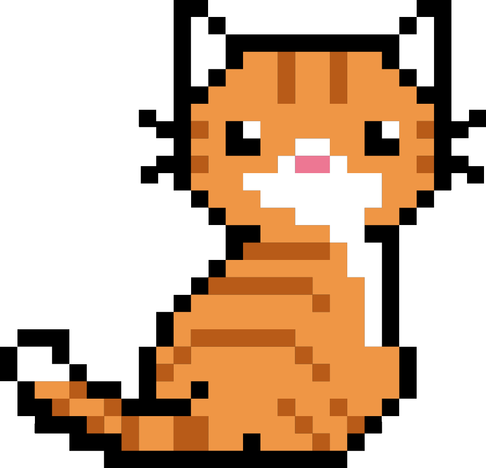

CAT SCAN
?
CLICK THE MAP TO
LOG A CAT!

✕
New sighting!
A name for this cat
Vibe check
Friendly
Diva
Shy
Food-motivated
Mysterious
Other...
Photo (optional)
Your name (credited as discoverer)
Add to the map
✕
Got a different name for them?
Add name
Spotted them recently?
Add sighting
✕
How this works
Spot a cat? Tap the map right where you found them.
Snap a photo, give them a name. If someone's already found them, add your name for them too.
Nothing to report? Browse the cats your neighbors have already found.